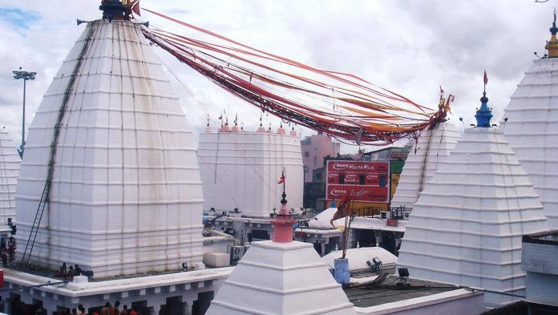

Baidyanath Dham Temple

Baidyanath Dham
The Jal Mandir or Water Temple is situated in[1] Pawapuri (also known as Apapapuri which means a town without sins),[2][3] in the Indian state of Bihar. It is dedicated to Mahavira, the 24th Tirthankara (religious preacher of Jainism), which marks the place of his cremation. Mahavira attained Nirvana (death) in Pawapuri in 527 BC.[4][5][6] The temple was originally built by King Nandivardhan, elder brother of Mahavira, within the pond which is filled with red coloured lotus flowers.[7] It is one of the five main temples in Pawpuri, where the "Charan Paduka" or foot impression of Mahavira is deified
The temple, a famous and sacred pilgrimage centre[8] of Jainism, is located in the holy city of Pawapuri in the Nalanda district in the Ganga Basin. It is 108 kilometres (67 mi) away from Patna, the capital city of Bihar which is the nearest airport. Rajgir the nearest convenient railway station is 38 kilometres (24 mi) away,[5][6][9] and 8 miles (13 km) from Biharsharif city in the subdivision of the same name. It is at the end of a 1-mile-long (1.6 km) branch road from the Patna-Ranchi road or NH 20.
According to the legend, Mahavira, the 24th Tirthankara attained Nirvana (died) at Pavapuri.[10] The place of his cremation became a pilgrimage centre when a large number of pilgrims took out a very large amount of soil from the site, which was considered as sacred as ashes of Mahavira, and thus created a huge pit which got filled up with water and became a pond. To commemorate the place of his nirvana a temple was built within the tank
History
Mahavira was a prince of the Magadha Kingdom then known as "Madyama Pawa" or "Apawapuri",[5] and became an ascetic at the age of 30. During one of the religious observances, called the chaturmas observed by Jains for four months during the rainy season starting from the beginning of the month of Āṣārh (22 June to 22 July) and ending in the month of Kartik (October/November), the Jain monks and nuns remain at one holy place and preach the religious teachings of Jainism to the local people. Mahavira also observed this practice and during this period his one such stay was at Pawapuri.
On the Dipawali night on the 15th day of the month of Kartik he breathed his last when he was 72 years old. While the place of his Nirvana is commemorated by a temple called the "Gaon Mandir" meaning "village temple" (also called "Thal Mandir"), the location where he attained Nirvana, the temple built within a tank is known as the Jal Mandir.[1] There is also another temple here dedicated to Mahavira called "Samosharan" where a statue of Mahavira delivering his last sermon is deified; the temple is circular in shape with beehive shape design
Temple
Jal Mandir, meaning a "temple in water",[7] is built in white marble within the water tank; the tank measures 84 bigha (One bigha is 5 acres, area is 16.8 acres).
The water surface of the lake is covered with lotuses. This architecturally elegant temple in the form of a "Vimana" or chariot has the footprint of Mahavira for worship. A 600-foot-long (180 m) bridge built in stone connects the temple with the bank of the water tank.[5] The temple shines bright and sublime during a moonlit night. The pond has many species of fish which are fed by the priests and devotees.[13]
On the occasion of Diwali, devotees make a special pilgrimage to the shrine to commemorate the nirvana of Mahavira.